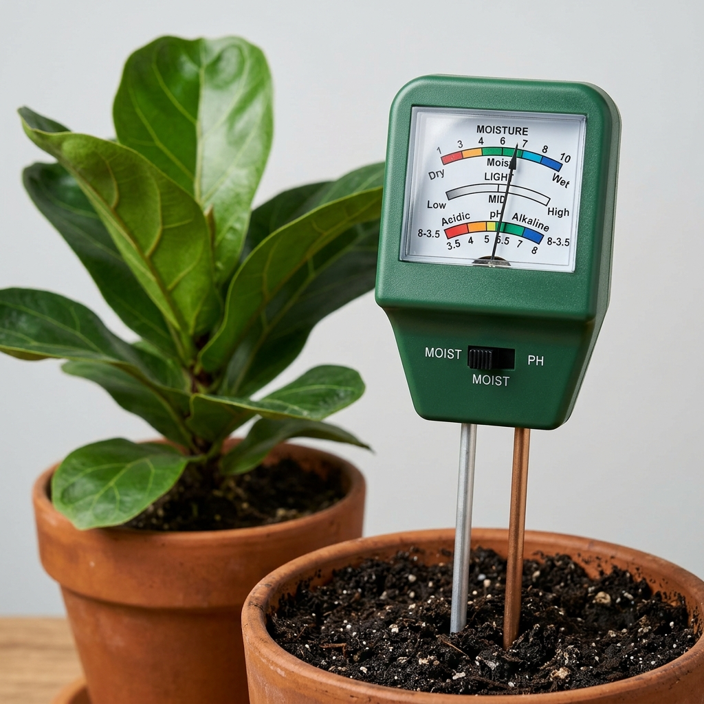

Raw Sundarbans Forest Honey — Unfiltered, Unadulterated
⚠ বাজারের সাধারণ মধুতে লুকিয়ে থাকা ক্ষতিকর উপাদান আপনার শরীরে কী ক্ষতি করছে তা হয়তো আপনি টেরও পাচ্ছেন না।
আমাদের এই সুন্দরবনের খাঁটি মধু সরাসরি প্রকৃতির কোল থেকে সংগৃহীত। জারে ঢালার পর এর রং, ঘনত্ব আর আসল ঘ্রাণ নিলেই আপনি বাজারের সাধারণ জিনিসের সাথে এর আকাশ-পাতাল পার্থক্য বুঝতে পারবেন। এটি আপনার পরিবারের প্রতিদিনের রোগ প্রতিরোধ ক্ষমতা বাড়াতে জাদুর মতো কাজ করবে। আজই একবার অন্তত খাঁটি জিনিসের স্বাদ নিয়ে দেখুন।
প্রতি ৫০০ গ্রাম। ডেলিভারি চার্জ আলাদা।
পরিমাণ বেছে নিন:
পরিমাণ:
বাজারের বিষ থেকে পরিবারকে আজই বাঁচান · ক্যাশ অন ডেলিভারি সুবিধা
ফরমালিন নেই
রাসায়নিক নেই
মানের গ্যারান্টি
বাজারের মধু বনাম Red Agro মধু
সুন্দরবনের গভীর অরণ্যে বনফুলের মৌচাক থেকে সংগৃহীত এই মধু সম্পূর্ণ প্রাকৃতিক। আমাদের দক্ষ মৌয়ালরা ঐতিহ্যবাহী পদ্ধতিতে মধু সংগ্রহ করেন — কোনো রাসায়নিক উত্তেজক বা ধোঁয়া ব্যবহার ছাড়াই।
বাজারে বিক্রি হওয়া মধুর মতো এটি কারখানায় পরিশোধিত নয়। এর প্রাকৃতিক পরাগ, এনজাইম ও অ্যান্টিঅক্সিডেন্ট সম্পূর্ণ অক্ষুণ্ণ।
কোনো মধ্যস্থতাকারী নেই। মৌচাক থেকে সংগ্রহ → পরিষ্কার কাচের জারে → সরাসরি আপনার কাছে। কোনো গুদাম, কোনো প্রক্রিয়াকরণ কারখানা নেই।
চিনি, গ্লুকোজ, ফ্রুক্টোজ সিরাপ, কৃত্রিম রং, সুগন্ধি বা সংরক্ষক — কিছুই নেই। শুধু খাঁটি মধু, যেভাবে প্রকৃতি তৈরি করেছে।
পণ্য পেয়ে সন্তুষ্ট না হলে ১০০% অর্থ ফেরত পাবেন। আমরা এত আত্মবিশ্বাসী কারণ আমরা জানি আমাদের পণ্য কী — এবং এতে কী নেই।
খাঁটি, প্রাকৃতিক মধুর উপকার — যা ভেজাল মধু থেকে কখনো পাওয়া সম্ভব নয়।
প্রাকৃতিক অ্যান্টিঅক্সিডেন্ট শরীরকে সংক্রমণ থেকে রক্ষা করে
কাশি, গলাব্যথা ও ব্রঙ্কাইটিসে প্রাকৃতিক প্রতিকার
প্রাকৃতিক এনজাইম হজম সহজ করে, অন্ত্র সুস্থ রাখে
রাতে গরম দুধের সাথে — ভালো ঘুম ও দ্রুত শরীর পুনরুদ্ধার
সতর্কতা: ১ বছরের কম বয়সী শিশুদের মধু দেবেন না। ডায়াবেটিস রোগীরা চিকিৎসকের পরামর্শ নিন।
আমাদের ডেলিভারি প্রক্রিয়া স্বচ্ছ এবং সম্পূর্ণ নিরাপদ।
পণ্যের নাম, পরিমাণ ও আপনার ঠিকানা পাঠান — আমরা ৩০ মিনিটে নিশ্চিত করব।
প্রতিটি অর্ডার ফ্রেশ কাচের জারে প্যাক করা হয় — ডেলিভারির ২৪ ঘণ্টার মধ্যে।
শহরের মধ্যে: ১-২ কার্যদিবস · চার্জ: ৬০ টাকা
শহরের বাইরে: ২-৪ কার্যদিবস · চার্জ: ১২০ টাকা
"বাজার থেকে মধু কিনতাম, কিন্তু পানির মতো পাতলা থাকত — এখন বুঝি কেন। Red Agro এর মধু দেখলেই বোঝা যায় আসল। মোটা, গাঢ় রং, সুন্দর গন্ধ। আর আমার বাচ্চাদের প্রতিদিন দিই নিশ্চিন্তে।"
"আমি ডায়াবেটিসের রোগী। ডাক্তার বলেছিল বাজারের মধু খাওয়া বন্ধ করতে কারণ তাতে লুকানো চিনি আছে। Red Agro এর মধু ট্রাই করলাম — সুগার লেভেলে কোনো অস্বাভাবিক পরিবর্তন হয়নি। এখন নিয়মিত নিচ্ছি।"
দুই নিরাপদ পথের সেরা পণ্য থেকে বেছে নিন
কোন পথটি আপনার জন্য সঠিক? নিজের বাগান করবেন নাকি ফার্ম থেকে নেবেন? কোনো শর্ত ছাড়াই আমাদের সাথে কথা বলুন।
হোয়াটসঅ্যাপে মেসেজ দিন📞 01410-363256 · কোনো কিছু কেনার চাপ নেই, নির্দ্বিধায় পরামর্শ নিন।